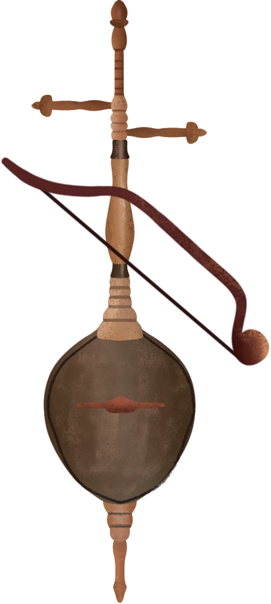

The rebab
The earliest ancestor
The Rebab, a precursor to the modern violin, originated in the 8th century Middle East and spread to North Africa and Europe via trade routes. It was divided into three types: the bowed Rebab, plucked Rebab, and the Rebab with a skin-covered body. It was popular in medieval Islamic courts and traditional Arabic and Persian music, and also influenced the development of the European violin.
Play the rebec
